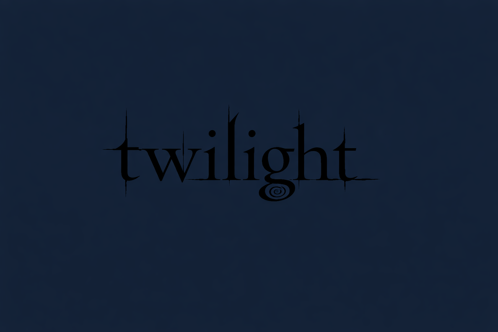

O incrível mundo de Crepúsculo
Aqui você vai encontrar curiosidades, teorias, informações sobre os personagens e os momento mrcantes da saga. Seja você Team Edward ou Team Jacob, este espaço foi criado para compartilhar a magia e atmosfera única de Forks.